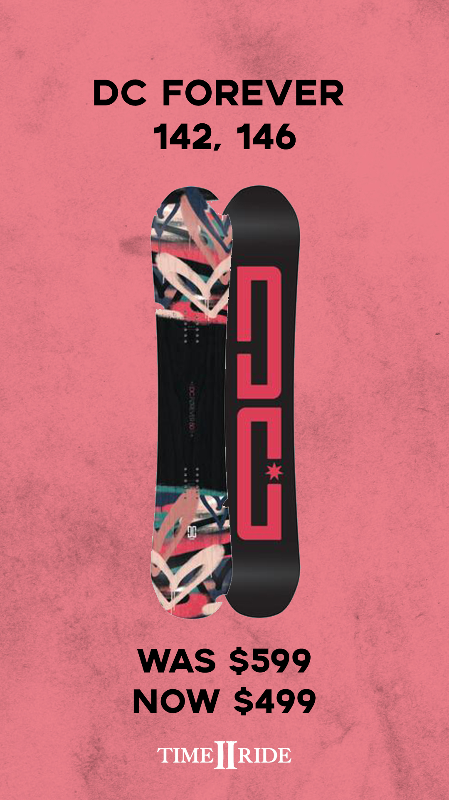
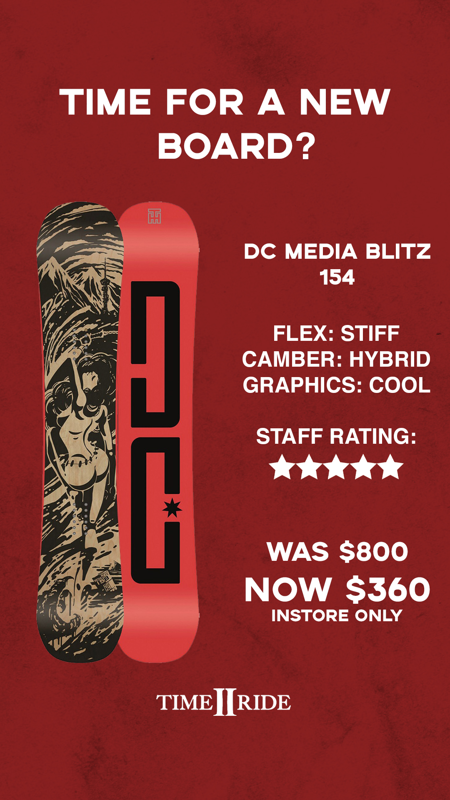

Whilst working for Time 2 Ride, a snowboard retailer in Jindabyne, I felt that the store could utilise a format for Instagram stories to highlight specific items that are either noteworthy or on sale.
I created this template in PSD format that is easily adjustable to any product that clearly conveys information at a glance and retains the snowboard store aesthetic.


This process has been great hands on experience in using both marketing and design skills, and the most prominent lesson learnt is the importance of clear visual communication.
Check out the Instagram HERE.